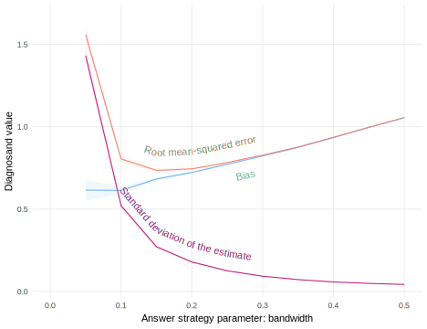

library(rdss) # for helper functions
library(CausalQueries)
causal_model <- make_model("X -> M -> Y <- W -> M") |>
set_restrictions("(M[X=1] < M[X=0]) | (M[X=1, W=1] == M[X=0, W=1])") |>
set_restrictions("(Y[M=1] < Y[M=0]) | (Y[M=1, W=1] == Y[M=0, W=1])")
strategies = c("X-Y", "X-Y-M", "X-Y-W", "X-Y-W-M")16 Observational : causal
In an observational design, researchers do not themselves assign units to conditions; the natural processes of the world are responsible for the observed treatment conditions. Causal inference from observational research designs is the art of imagining what outcomes treated units would have expressed if they had not been treated – and the outcomes of the untreated units if they had been treated.
Observational causal inference is hard because it depends on the world generating just the right circumstances. Process tracing requires observation of just the right clues to the causal mystery. Selection-on-observables requires measurement of a set of variables that collectively close all the backdoor paths from treatment to outcome. A difference-in-difference design requires a very specific kind of over-time stability — that untreated potential outcomes move exactly in parallel. Instrumental variables designs require nature to randomly assign something we can measure. Regression discontinuity designs requires a cutoff that determines who is treated and who is not that we can observe and understand.
These are five of the big observational causal research designs. Many additional innovative designs have been developed to try to estimate causal quantities from observational research designs. These generally seek clever innovations in \(A\) in order to have as few assumptions on \(M\) as possible. We refer readers to Angrist and Pischke (2008) and Dunning (2012) for excellent overviews of the design theory behind many of these methods.
16.1 Process tracing
We declare a qualitative design in which researchers seek to learn about the effect of a cause on a single unit. The diagnosis helps evaluate the gains from different within-case data gathering strategies.
In qualitative research we are often interested in learning about the causal effect for a single unit. For example, for a country unit that underwent sanctions (an “event”), we want to know the causal effect of the sanctions on government behavior. To do so, we need to know what would have happened if the event did not happen, the counterfactual outcome that did not occur as opposed to the factual outcome that did. Due to the fundamental problem of causal inference, we cannot observe what would have happened if that counterfactual case had happened. We have to guess—or infer—what would have happened. Social scientists have developed a large array of tools for guessing missing counterfactual outcomes — what would have happened in the counterfactual case, if the event had not happened.1
A common inquiry in this setting is whether an outcome was due to a cause. For instance in a case with \(X=1, Y=1\), this “causal attribution” inquiry or “Cause of Effect” inquiry can be written \(\mathrm{CoE}:=1-Y(0)| X=1 \mathrm{ \& } Y=1\). For a unit with \(X=1\) and \(Y=1\), \(\mathrm{CoE}=1\) if \(Y(0)=0\).
“Process tracing” is a prominent strategy for assessing causes of effects (Bennett and Checkel 2015; Fairfield and Charman 2017). Here, following for example Humphreys and Jacobs (forthcoming), we think of process tracing as a procedure in which researchers provide a theory in the form of a causal model that is rich enough to characterize the probability of observing ancillary data (“Causal process observations” (Brady 2004)) given underlying causal relations. When equipped with prior beliefs, such a model in turn lets one use Bayes’ rule to form posterior beliefs over causal relations after observing these data.
For intuition, say we are interested in whether a policy caused a change in economic outcomes. We theorize that for the policy to matter, it at least had to be implemented. So if we find out that the policy was not implemented we infer that it did not matter. We make theory-dependent inferences that are reasonable insofar as the theory itself is reasonable. In this example, if there are plausible channels through which a policy might have mattered even if not implemented, then our conclusion would not be warranted.
To illustrate design choices for a process tracing study we consider a setting in which we have already observed \(X, Y\) data and we are interested in figuring out whether \(Y\) takes on the value it does because \(X\) took on the value it did.
More specifically we imagine a model with two ancillary variables, \(M\) and \(W\). We posit that \(X\) causes \(Y\) via \(M\)—with negative effects of \(X\) on \(M\) and of \(M\) and \(Y\) ruled out. And we posit that \(W\) is a cause of both \(M\) and \(Y\). Specifically, our model asserts that if \(W=1\) then \(X\) causes \(M\) and \(M\) causes \(Y\) for sure. Under this model \(M\) and \(W\) each serve as “clues” for the causal effect of \(X\) on \(Y\).
Using the language popularized by Van Evera (1997), \(M\) provides a “hoop” test: if you look for data on \(M\) and find that \(M=0\) when \(X=1\) and \(Y=1\) then you infer that \(X\) did not cause \(Y\). If on the other hand you examine \(W\) and find that \(W=1\) then you have a “smoking gun” test: You infer that \(X\) did indeed cause \(Y\). However, if you find both \(M=0\) and \(W=1\), then you know your model is wrong.
The model can be described using the CausalQueries package thus:
The DAG of the causal model is shown in Figure 16.1.
This model definition describes the DAG but also specifies a set of restrictions on causal relations. By default, flat priors are then placed over all other possible causal relations, though of course other prior beliefs could also be specified.
We now have all we need to assess what inferences we might make given different sorts of observations on \(W\) and \(M\).
Table 16.1 shows three types of quantities: beliefs upon observing \(X=1, Y=1\), conditional inferences upon observing additional data on \(M\) or \(W\), and the conditional probability of seeing different outcomes for \(M\) or \(W\).
| Query | Value |
|---|---|
| Prob(CoE=1|X = 1, Y=1) | 0.71 |
| Prob(CoE=1 | X = 1, Y = 1, M=0) | 0.00 |
| Prob(CoE=1 | X = 1, Y = 1, M=1) | 0.77 |
| Prob(CoE=1 | X = 1, Y = 1, W=0) | 0.20 |
| Prob(CoE=1 | X = 1, Y = 1, W=1) | 1.00 |
| Prob(M=1 | X = 1, Y = 1) | 0.93 |
| Prob(W=1 | X = 1, Y = 1) | 0.64 |
We see here that \(M\) provides a hoop test since we are certain that \(X\) does not cause \(Y\) when \(M=0\), but we are uncertain when \(M=1\). (Moreover, we already expect to see \(M=1\) given what we have seen for \(X\) and \(Y\)). \(W\) provides a smoking gun test since we are certain that \(X\) causes \(Y\) when \(M=1\) but uncertain otherwise. Since we have access to both conditional inferences and the probability of seeing different types of data, we have enough data in Table 16.1 to calculate how different strategies will perform.
We think it useful to fold these quantities into a design declaration so that research consumers can access the data strategies and answer strategies in the same way as they would for any other problem.
Declaration 16.1 provides a flexible process tracing design. You can use this design with a different causal model and substituting in different causal queries and process tracing strategies. Given a background causal model, the design first draws a “causal type”—that is a case together with all its causal relations. The value of the estimand (EoC) can then be calculated and the observable data corresponding to the type revealed. The estimation uses a custom function, which simply returns the inferences on the query—like those in the Table 16.1—but given different possible observed values for all nodes. No data strategy is provided explicitly as this is tied up here in the estimation, that is, the estimation step describes what data will be used.
Declaration 16.1 Process tracing design declaration
declaration_16.1 <-
declare_model(draw_causal_type(causal_model)) +
declare_inquiry(
CoE = query_distribution(
causal_model,
query = "Y[X=1] - Y[X=0]",
parameters = causal_type)) +
declare_measurement(
handler = function(data)
causal_model |>
make_data(parameters = data$causal_type)) +
declare_estimator(
handler = label_estimator(process_tracing_estimator),
causal_model = causal_model,
query = "Y[X=1] - Y[X=0]",
strategies = strategies)Diagnosis 16.1 Process tracing diagnosis
Given such a model, a case in which \(X = Y = 1\) (for instance), and limited resources, we now want to know whether we would be better gathering data on \(M\) or on \(W\) or both.
The answers are given in Figure 16.2. Here we show the expected error from inferences given each process tracing strategy. We break up the diagnoses according to the \(X\), \(Y\) data already observed—thus illustrating how an unconditional model can be used to assess designs even after some data is observed. Across the four possible data patterns we see equivalent implications for settings in which we are interested in a case with \(X=Y=1\) and a case with \(X=Y=0\). For the cases with \(X \neq Y\) we already know—because of the monotonicity restrictions in the model—that \(X\) did not cause \(Y\) and so we learn nothing from all strategies.
We see only modest declines in expected errors from observation of the mediator \(M\) (consistent with the manual calculation above), but large declines from observing \(W\). If we already observe \(W\) the gains from observing \(M\) are still more slight. Broadly this confirms a more general observation that mediators can provide limited traction for learning about causes of effects relative to moderators (Dawid, Humphreys, and Musio 2022).
16.1.1 Design examples
Revkin and Ahram (2020) consider the “rebel social contract” in which rebel groups offer citizens political protections and social benefits in return for citizens’ allegiance. The authors use the presence of formal complaints by citizens about the Islamic State in Iraq and Syria as a hoop test for the causal model of exchange of protections for allegiance.
Snyder and Borghard (2011) attempt to apply a smoking gun test to audience cost theory, but could find no clear cut cases of settings in which “the public was opposed to military action before a threat was issued and then explicitly punished the leader for not following through with a threat with which it disagreed.”
16.2 Selection-on-observables
We declare a design in which a researcher tries to address concerns about confounding by conditioning on other observable variables. In the design the researcher has to specify how the other variable creates a risk of confounding and how exactly they will take account of these variables to minimize bias.
When we want to learn about causal effects, but treatments are allocated by the world and not by the researcher, we are sometimes stuck. It is possible that a comparison of treated units to control units will generate biased inferences because of selection – the problem that certain types of units “select” into treatment and others into control. If the average potential outcomes of the groups that come to be treated or untreated are not equal, then a comparison of the realized outcomes of the two groups will yield biased causal inferences.
Sometimes, however, we know enough about selection in order to condition on the variables that cause it. A selection-on-observables design stipulates a family of models \(M\) of the world that describe which variables are responsible for selection, then employs a data strategy that measures those variables, rendering them “observable.” In the answer strategy, we draw on substantive knowledge of the causal process to generate an “adjustment set,” or a set of variables that predict selection into treatment. In the language of causal path diagrams, an adjustment set is a set of variables that, when conditioned upon, closes all back door paths from the treatment to the outcome. We can condition on the adjustment set using a variety of alternative answer strategies, for example through regression adjustment, stratification, or matching.
The quality of causal inferences we draw comes down to whether our claims about selection into treatment are correct. If we’ve missed a cause (missed a back door path), then our inferences will be prone to bias. It is the nature of the selection-on-observables design that we can’t know if our claims about the processes that cause selection are correct or not; the design amounts to a leap of faith in the theoretical model.
The problems don’t end there. We risk bias if we fail to adjust for \(X\) under some models — but we will also risk bias if we do adjust for \(X\) under other models. In Figure 16.3 we illustrate four of the possible roles for an observable variable \(X\): as a confounder of the relationship between \(D\) and \(Y\); as a collider, which is affected by both \(D\) and \(Y\); as a mediator of the relationship between \(D\) and \(Y\); and as a predictor of \(Y\) with no connection to \(D\). We set aside in these DAGs the possible roles of an unobservable variable \(U\) that would introduce additional problems of confounding.
If \(X\) is a confounder, failing to adjust for it in studying the relationship between the treatment \(D\) and outcome \(Y\) will lead to confounding bias. We often think of fourth DAG as the alternative to this, where \(X\) is a predictor of \(Y\) but has no link to \(D\). In this circumstance, we still want to adjust for \(X\) to seek efficiency improvements by soaking up additional variation in \(Y\), but failing to do so will not introduce bias. If the true model is definitely represented by either the first or fourth DAG, we should clearly choose to adjust for \(X\). In the first case, we should adjust to close the back-door path and in the fourth case, we will do no worse in terms of bias and may in fact increase precision.
However, the middle two DAGs present problems if we do adjust for \(X\). In the first, \(X\) is a collider: it is affected by both \(D\) and \(Y\). Adjusting for \(X\) if this is the true model introduces collider bias, because we open a backdoor path between \(D\) and \(Y\) through \(X\). We also introduce bias if we control for \(X\) if the mediator model (DAG 3) is the true model, wherein \(D\) affects \(X\) and \(Y\) and \(X\) affects \(Y\) (i.e., \(X\) is a mediator for the relationship between \(D\) and \(Y\)). But the reason here is different: controlling for a mediator adjusts away part of the true treatment effect.
In a selection-on-observables design, we must get many features of the model correct, not only about the factors that affect \(D\). We must be sure of all the arrows into \(X\), \(D\), and \(Y\) and the order of the causal arrows. In some cases, in natural experiments where selection processes are not randomized by researchers but are nevertheless known, these assumptions can be sustained. In others, we will be making heroic assumptions.
Declaration 16.2 explores these considerations, with a model defining the relationship between a causal factor of interest \(D\) and outcome \(Y\) and an observable confounder \(X\), the average treatment effect as the inquiry, a simple measurement strategy, and two estimators with and without adjustment for \(X\). We use exact matching as our adjustment strategy.
Declaration 16.2 Matching design declaration
library(MatchIt)
exact_matching <-
function(data) {
matched <- matchit(D ~ X, method = "exact", data = data)
match.data(matched)
}
declaration_16.2 <-
declare_model(
N = 100,
U = rnorm(N),
X = rbinom(N, 1, prob = 0.5),
D = rbinom(N, 1, prob = 0.25 + 0.5 * X),
Y_D_0 = 0.2 * X + U,
Y_D_1 = Y_D_0 + 0.5
) +
declare_inquiry(ATE = mean(Y_D_1 - Y_D_0)) +
declare_step(handler = exact_matching) +
declare_measurement(Y = reveal_outcomes(Y ~ D)) +
declare_estimator(Y ~ D,
weights = weights,
.method = difference_in_means,
label = "Matched difference-in-means") +
declare_estimator(Y ~ D,
.method = difference_in_means,
label = "Raw difference-in-means")We declare beliefs about the selection process and how \(D\), \(Y\), and \(X\) are related. The model needs to include potential outcomes for the main outcome of interest (\(Y\)) and a specification of the assignment of the key causal variable (here, \(D\)). Here, we have defined the assignment process as a function of an observable variable \(X\). In fact, \(X\) is the only variable that affects selection into treatment: \(X\) is a binary variable (i.e., two groups), and the probability of treatment is 0.4 when \(X=0\) and 0.6 when \(X=1\). In addition, we define the potential outcomes for \(Y\), which invoke confounding by \(X\) because it affects both \(D\) and \(Y\). We only invoke one possible relationship between \(X\), \(Y\), and \(D\), and so do not consider the possibilities of colliders or mediators.
In our model, \(U\) is not a confounder, because it affects \(Y\) but not \(D\); this is a strong excludability assumption on which our causal inferences depend. The assumption is strong because ruling out all unobservable confounders is typically impossible. Most causal factors in nature are affected by many variables, only some of which we can imagine and measure. The first estimator, with adjustment, uses the weights from the exact matching estimator. The matching procedure adjusts for differences in the probability of selection into treatment according to \(X\). The second, unadjusted, estimator does not control for \(X\) so suffers from unobserved confounding, because we do not adjust for \(X\) which predicts both treatment and the outcome.
Diagnosis 16.2 Matching design diagnosis
In Figure 16.4, we see that the raw, unmatched estimate is quite biased (about 20% of the average estimate) and that the matched estimate is unbiased. If we fail to adjust for the observable features of the selection process, we have biased answers. But if we do control in this case, we obtain unbiased answers. However, as highlighted earlier, these results depend on the plausibility of our model, which in this case involves observed confounding of the relationship between \(D\) and \(Y\) by \(X\). If there was unobservable confounding from \(U\), or if \(X\) was a collider or mediator, there would be bias even if we control for \(X\).

16.2.1 Design examples
Bateson (2012) uses a selection-on-observables design to estimate the causal effect of crime victimization on political participation from regional barometer survey data. The main specification is justified by the argument that all back-door paths are closed using Ordinary Least Squares regression and a robustness check uses a nearest-neighbor matching approach under equivalent assumptions.
Prillaman (2022) uses a matching design to compare Indian villages that featured women’s self-help groups to those that did not on rates of women’s political participation.
16.3 Difference-in-differences
We declare a differences-in-differences design in which the effect of a treatment is assessed by comparing changes over time for a unit that gets treated to changes over time in the same period for a unit the does not get treated. The declaration and diagnosis helps clarify when effect heterogeneity threatens causal inferences drawn from this design.
The difference-in-differences design compares the pre-to-post-treatment difference in treated units to that of untreated units. We use the over-time change in the untreated units to account for the changes over time in the treated units that are not due to the treatment. Suppose outcomes were rising over time for all units but we only looked at the pre-to-post difference in the treatment group. We might falsely infer the treatment increased outcomes. The logic of the difference-in-differences design is that we can subtract off the trends affecting all units in order to adjust our causal effect estimates.
The difference-in-differences design relies on a strong assumption in \(M\): the parallel trends assumption. This assumption asserts that the changes (not the levels) in untreated potential outcomes are the same for treated and untreated units. Because this assumption depends on the values of the unrealized (and thus unobservable) control potential outcomes in the treated units after treatment, it cannot be tested. A widely-used diagnostic is to look at the trends in outcomes between the treated and control unit before treatment; this is only an indirect test because the parallel trends assumption concerns the unobserved control trend of the actually treated unit.
The design has been famously used for analyses of two periods (before and after) and two groups (treated and untreated) such as a policy change in one state compared to another before and after the policy change. Today, difference-in-differences is most often used in many-period many-group settings with observational panel data. Here, the logic of the two-period two-group design is extended through analogy. Parallel trends between treated and control groups are assumed on average across treated groups and periods. Unfortunately, the analogy holds only under limited circumstances, a fact only recently discovered.
Declaration 16.3 describes a 20-period, 20-unit design in which eventually-treated units become treated at different times, a common setting in empirical social science often referred to as the staggered adoption design. The treatment effect of interest might be a state-level policy adopted in 20 states at some point within a 20-year period, so we draw on comparisons before and after policy adoption within states and comparisons across states that have and have not yet adopted treatment. We use the did_multiplegt_tidy function (available in the rdss companion package) to prepare the output from the DIDmultiplegt package that implements the estimation procedure.
Declaration 16.3 Difference-in-differences design
library(rdss) # for helper functions
library(DIDmultiplegt)
N_units <- 20
N_time_periods <- 20
declaration_16.3 <-
declare_model(
units = add_level(
N = N_units,
U_unit = rnorm(N),
D_unit = if_else(U_unit > median(U_unit), 1, 0),
D_time = sample(1:N_time_periods, N, replace = TRUE)
),
periods = add_level(
N = N_time_periods,
U_time = rnorm(N),
nest = FALSE
),
unit_period = cross_levels(
by = join_using(units, periods),
U = rnorm(N),
potential_outcomes(Y ~ U + U_unit + U_time +
D * (0.2 - 1 * (D_time - as.numeric(periods))),
conditions = list(D = c(0, 1))),
D = if_else(D_unit == 1 & as.numeric(periods) >= D_time, 1, 0),
D_lag = lag_by_group(D, groups = units, n = 1, order_by = periods)
)
) +
declare_inquiry(
ATT = mean(Y_D_1 - Y_D_0),
subset = D == 1
) +
declare_inquiry(
ATT_switchers = mean(Y_D_1 - Y_D_0),
subset = D == 1 & D_lag == 0 & !is.na(D_lag)
) +
declare_measurement(Y = reveal_outcomes(Y ~ D)) +
declare_estimator(
Y ~ D, fixed_effects = ~ units + periods,
.method = lm_robust,
inquiry = c("ATT", "ATT_switchers"),
label = "twoway-fe"
) +
declare_estimator(
Y = "Y",
G = "units",
T = "periods",
D = "D",
handler = label_estimator(did_multiplegt_tidy),
inquiry = c("ATT", "ATT_switchers"),
label = "chaisemartin"
) We define hierarchical data with time periods nested within groups, such that each of the 20 units have 20 time periods from 1 to 20. We assign units to be treated at some point in the period (D_unit), and confound treatment assignment with unobservable unit-specific features U_unit. (If there were no confounding, we would not need the parallel pretrends assumption.) In addition, the timing of treatment is randomly assigned (D_time). The assignment D then is jointly determined by whether the unit is treated and whether the current period is after the assigned D_time. We allow for unit-specific variation U_unit and time-specific variation U_time that affects the outcome as well as unit-period characteristics U. Potential outcomes are a function of these unit-, time-, and unit-time-specific characteristics, and a treatment effect that varies according to when units are treated (more on the importance of this treatment effect heterogeneity below).
The difference-in-difference design typically targets the average treatment effect on the treated (ATT) inquiry. We leverage over time comparisons within units to isolate the causal effect of treatment, and difference out time-varying characteristics by subtracting off the change in untreated units. Unfortunately, except under extremely limited circumstances — exactly homogeneous treatment effects — we will not be able to recover unbiased estimates of the ATT. We can, however, under some circumstances and with some estimators, recover the ATT for a specific subgroup: units in those periods that just switched from untreated to treated. We declare the ATT for these “switchers” as the inquiry.
So many answer strategies have been proposed in recent years to address bias in the difference-in-differences design that we cannot summarize them in this short entry. Instead, we illustrate how to assess the properties of two particular estimators under a range of conditions. First, we define the standard two-way fixed effects estimator with fixed effects by time and unit. The two-way fixed effects fits the empirical goal of difference-in-differences: the time fixed effects net out time-varying unit-invariant variables such as seasonality and time trends. The unit fixed effects net out unit-varying variables that are time-invariant like race or age-at-birth of individuals and long-term histories of violence of territories. However, the two-way fixed effects estimator relies on comparisons between units that are treated and units that are not yet treated. When treatment effects differ across units depending on when they are treated (as they do in the design here), then those comparisons will be biased: part of the treatment effect will be subtracted out of the estimate. Our second estimator, proposed by Chaisemartin and d’Haultfoeuille (2020), addresses this problem when estimating the ATT among switchers.
Diagnosis 16.3 Difference-in-Differences diagnosis
diagnosis_16.3 <- diagnose_design(declaration_16.3)
Figure 16.5 shows that the two-way fixed effects estimator is biased for both the ATT and the ATT on the switchers. By contrast, the Chaisemartin and d’Haultfoeuille (2020) estimator is unbiased for the ATT on the switchers. Neither estimator recovers unbiased estimates of the ATT. The next section explains why.
Diagnosis 16.4 Redesigning over alternative models of treatment effect heterogeneity
The issues with the two-way fixed effects estimator emerge when treatment effects differ for units that are treated later versus earlier. Following Principle 3.2: Design agnostically, we declare a model with homogeneous treatment effects, as well as two kinds of time-varying heterogeneous treatment effects: one in which effects are lower for units treated later and one in which effects are higher for units treated later.
The timing of treatment, nature of heterogeneous effects, and answer strategies interact to determine the properties of the design. Figure 16.6 shows the diagnosis under all three sets of potential outcomes, and examines both the ATT and the ATT for switchers inquiries. We consider both the two-way fixed effects estimator and the Chaisemartin and d’Haultfoeuille (2020) estimator.
When treatment effects happen to be homogeneous (middle panel), both estimators recover unbiased estimates of both the ATT and the ATT for switchers, which of course are equal to one another because of treatment effect homogeneity. However, when treatment effects vary with the timing of treatment (left or right panels), the two-way fixed-effects estimator is biased for both inquiries. The Chaisemartin and d’Haultfoeuille (2020) estimator is also biased for the ATT, but remains unbiased for the ATT among switchers regardless of the pattern of treatment effect heterogeneity.

16.3.1 Design examples
Paglayan (2019) uses a difference-in-differences design to estimate the causal effect of collective bargaining rights for teachers on education spending in the American states.
Carreri and Dube (2017) uses a difference-in-differences design to estimate the effect of changes in the international price of oil on the election of right-wing politicians in oil-dependent countries.
16.4 Instrumental variables
We declare a design in which a researcher addresses confounding concerns by using an instrumental variable. Under the right conditions, the approach can generate unbiased estimates for treatment effects for units whose treatment status is sensitive to the instrument.
When we cannot credibly assert that we have controlled for all confounding variables as in a selection-on-observables design (see Section 16.2) and when we do not think the parallel trends assumption is likely to hold in a difference-in-differences design (see Section 16.3), we might have to give up on our goal of drawing causal inferences.
But occasionally, the world yields an opportunity to sidestep unobserved confounding by generating as-if random variation in a variable that itself affects the treatment variable but does not directly affect the outcome. We call the variable that is as-if randomly assigned by the world an “instrument.”
Instruments are special. They are variables that are randomly assigned by nature, the government, or other individuals or groups. Usually, genuine random assignments have to be crafted by researchers as part of a deliberate data strategy. Experimenters go to great lengths to randomly expose some units but not others to treatments. When the world provides bona fide random variation in an instrumental variable, it’s a rare and valuable opportunity. By virtue of as-if random assignment, we can learn about the average causal effects of the instrument itself without any further consternation. Conditional on geography and season, weather conditions are as-if randomly assigned, so we can learn about the average effects of rainfall on many outcomes, like crop yields, voter turnout, and attendance at sporting events. Conditional on gender and birth year, draft numbers are randomly assigned by the government, so we can learn about the average effects of being drafted on educational attainment, future earnings, or public policy preferences.
We illustrate the logic of instrumental variables with the DAG shown in Figure 16.7. An instrument \(Z\) affects an endogenous treatment \(D\) which subsequently affects an outcome \(Y\). Many other common causes, summarized in terms of unknown heterogeneity \(U\), affect both \(D\) and \(Y\). It is because of this unmeasured confounding that we cannot learn about the effect of \(D\) on \(Y\) directly using standard tools.

We can naturally imagine an inquiry that represents the effect of the instrument (\(Z\)) on an outcome of interest such as the effect of the draft number on future earnings. In the terminology of instrumental variables, this inquiry is called the “reduced form” or the “intention-to-treat” (ITT) effect. If it’s really true that the instrument is randomly assigned by the world, estimation of the reduced form effect is straightforward: we estimate the causal effect of \(Z\) on \(Y\) using, for example, a difference-in-means estimator. Sometimes, we are also interested in the “first-stage” effect of the instrument on the treatment variable. Similarly, we can target this inquiry by studying the causal effect of \(Z\) on \(D\), for example using the difference-in-means estimator again.
The trouble comes when we want to leverage the random assignment of the instrument (\(Z\)) to learn about the average causal effect of the treatment variable (\(D\)) on the outcome (\(Y\)), where \(D\) is not randomly assigned but rather affected by \(Z\) and also other variables. To do so, we need to understand better how the instrument affects whether units are treated and then how both affect the outcome of interest. We need to understand “compliance” with the instrument.
We can define the compliance types of units in terms of the combinations of values the potential outcomes of \(D\) take on as a function of the values of the instrument \(Z\). The combinations are made up of the value of the treatment if unit \(i\) is assigned to control (\(D_i(Z_i = 0)\)) and the value if it is assigned to treatment (\(D_i(Z_i = 1)\)). With a binary instrument and binary treatment, there are four possible potential outcomes values and thus four types, enumerated in Table 16.2. These compliance types are sometimes known as “principal strata” (Frangakis and Rubin 2002).
| Type | \(D_i(Z_i = 0)\) | \(D_i(Z_i = 1)\) |
|---|---|---|
| Never-taker | 0 | 0 |
| Complier | 0 | 1 |
| Defier | 1 | 0 |
| Always-taker | 1 | 1 |
Never-takers are those who never take the treatment, no matter what the value of the instrument. Compliers take the value of the treatment they are assigned by the instrument. Defiers do exactly the opposite. When the instrument assigns them to take the treatment, defiers refuse it, but if it assigns them not to, they do take treatment. Like their name suggests, always-takers take the treatment regardless of the value of the instrument.
With these types in mind, we can now define a new inquiry that we will be able to target with instrumental variables under a special set of assumptions: a “local” average treatment effect (LATE) among compliers. The “local” qualifier indicates that the effect applies only to the specific group of units whose treatment status changes as a result of the instrument. The LATE is \(\mathbb{E}[Y_i(D_i = 1) - Y_i(D_i = 0) | D_i(Z_i = 1) > D_i(Z_i = 0)]\). This quantity is the average treatment effect among the compliers. The LATE is different from the ATE because it does not average over the effects for never-takers, always-takers, and defiers, but the ATE does.
We can adopt an instrumental variables answer strategy — using two-stage least squares for example — to estimate the LATE. But to do so without bias, we need to invoke new assumptions on top of those for randomized experiments. In the case of a binary instrument and a binary treatment, the five assumptions are:
Exogeneity of the instrument: \(Y_i(D_i = 1), Y_i(D_i = 0), D_i(Z_i = 1), D_i(Z_i = 0) \indep Z_i | X_i\). Substantively, this assumption requires that (possibly conditional on observed covariates in \(X\)) the instrument is as-if randomly assigned, so it is jointly independent of the treated and untreated potential outcomes as well as the potential values the treatment variable \(D\) would take on depending on the values of the instrument \(Z\). Exogeneity is usually justified on the basis of qualitative knowledge about why as-if random assignment is a reasonable assumption to make. The assumption can be bolstered — but not directly tested — with design checks like whether pre-treatment values of the covariates are balanced across the levels of the instrument.
Excludability of the instrument: \(Y_i(D_i(Z_i), Z_i) = Y_i(D_i(Z_i))\). We can “exclude” the instrument from the potential outcomes function \(Y_i()\), so the only relevant argument is the value of the treatment variable. Substantively, this means that \(Z\) has exactly no effect on \(Y\) except by changing the value of \(D\), or in other words a “total mediation assumption.” Under the exclusion restriction, the effect of the instrumental variable is wholly mediated by the treatment variable. The validity of the exclusion restriction cannot be demonstrated empirically and typically must be asserted on qualitative grounds. Since the reduced form of the instrument can be estimated for many different outcome variables, one piece of evidence that can bolster the exclusion restriction is to show that the instrument does not affect other plausible causal precedents of the outcome variable. If it does affect other variables that might, in turn, affect the outcome, the exclusion restriction might be an implausible assumption.
Non-interference: \(Y(D_i(Z_i), D_{-i}, Z_{-i}) = Y(D_i(Z_i))\). Like any non-interference assumption, here we assert that for any particular unit, other units’ values of the instrument or the treatment do not affect the outcome.
Monotonicity: \(D_i(Z_i = 1) \geq D_i(Z_i = 0), \forall_i\). This assumption states that the effect of the instrument on the treatment is either zero or is positive for all units. Monotonicity rules out defiers. Monotonicity is usually quite plausible (it’s tough to imagine a person who would serve in the military if not drafted but would not serve if drafted!), but it’s not possible to affirm empirically. An empirical test that demonstrates a positive effect of the instrument on the treatment for one group but a negative effect for a different group could, however, falsify the monotonicity assumption.
Non-zero effect of the instrument on the treatment. If the instrument does not affect the treatment, then it is useless for learning about the effects of the treatment on the outcome, simply because it generates no compliers. If there are no compliers, the LATE itself is undefined.
If all five of these assumptions are met, it can be shown that the inquiry \(\mathrm{LATE} = \frac{\mathrm{ATE}_{ \mathrm{Z\rightarrow Y} }}{\mathrm{ATE}_{Z\rightarrow D}} = \frac{\mathrm{Reduced~Form}}{\mathrm{First~Stage}}\). It is the quotient of the ATE of the instrument on the outcome divided by the ATE of the instrument on the treatment. This expression underlines the importance of the fifth assumption: if the instrument doesn’t affect the treatment, the first stage is equal to zero and the ratio is undefined.
Many of the five assumptions are represented in the DAG in Figure 16.7. The exogeneity of the instrument is represented by the exclusion of a causal effect of \(U\) on \(Z\). The omission of an arrow from \(Z\) to \(Y\) directly invokes the exclusion restriction. Non-interference is typically not directly represented in DAGs. Monotonicity and the non zero effect of the instrument on the treatment is represented by the causal arrow from \(Z\) to \(D\).
Moving to the answer strategy, a plug-in estimator of the LATE is the difference-in-means of the outcome according to the instrument divided by the difference-in-means of the treatment according to the instrument. Equivalently, we can use two-stage least squares, which will yield the identical answer as the ratio of the difference-in-means estimates when no covariates are included in the regression.
With the four elements of the design in hand, we declare the model in code, invoking each of the five assumptions in doing so:
Declaration 16.4 Instrumental variables design
declaration_16.4 <-
declare_model(
N = 100,
U = rnorm(N),
potential_outcomes(D ~ if_else(Z + U > 0, 1, 0),
conditions = list(Z = c(0, 1))),
potential_outcomes(Y ~ 0.1 * D + 0.25 + U,
conditions = list(D = c(0, 1))),
complier = D_Z_1 == 1 & D_Z_0 == 0
) +
declare_inquiry(LATE = mean(Y_D_1 - Y_D_0), subset = complier == TRUE) +
declare_assignment(Z = complete_ra(N, prob = 0.5)) +
declare_measurement(D = reveal_outcomes(D ~ Z),
Y = reveal_outcomes(Y ~ D)) +
declare_estimator(Y ~ D | Z, .method = iv_robust, inquiry = "LATE") The exclusion restriction is invoked in omitting a causal direct effect of \(Z\) in the \(Y\) potential outcomes. We invoke the monotonicity and non-zero effect of \(Z\) on \(D\) in the \(D\) potential outcomes, which have an effect of \(Z\) of 1. We invoke the non-interference assumption by excluding effects of the instrument values from other units in the definition of the \(D\) and \(Y\) potential outcomes. And we invoke the ignorability of \(Z\) by randomly assigning it in the assignment step.
How can you use this declaration? Many instrumental variables designs involve historical data, such that most remaining design choices are in the answer strategy. Declaring and diagnosing the design can yield insights about how to construct standard errors and confidence intervals and the implications of analysis procedures in which data-dependent tests are run before fitting instrumental variables models — and only fit if the tests pass. But other instrumental variables papers involve prospective data collection, in which an instrument is identified and outcome data (and possibly instrument and treatment data) are collected anew. In such settings, the design diagnosis and redesign tools are just as useful as in any prospective research design: to help select sampling and measurement procedures from the sample size to the number of outcomes to be collected. The key in this case is to build in the features of the instrument, the potential outcomes of treatment receipt, and the potential outcomes of the ultimate outcome of interest and to explore violations of the five assumptions in the model.
16.4.1 Design examples
Nellis and Siddiqui (2018) instrument for the share of secular legislators with the as-if randomly assigned victory of secularist candidates in close elections. The authors use this instrument to study the causal effect of secular legislators on religious violence in Pakistan.
Stokes (2016) studies the causal effects of wind turbines on voting for incumbents, instrumenting for the presence or absence of wind turbines with plausibly exogeneous differences in wind speeds across localities.
16.5 Regression discontinuity designs
We declare a design in which the assignment of a treatment is determined by whether a characteristic of a unit exceeds a certain threshold value. We demonstrate through diagnosis the bias-variance tradeoff at the heart of the choice of answer strategies that target the local average treatment effect inquiry, defined right at the cutoff.
Regression discontinuity designs exploit substantive knowledge that treatment is assigned in a particular way: everyone above a threshold is assigned to treatment and everyone below it is not. Even though researchers do not control the assignment, substantive knowledge about the threshold serves as a basis for a strong causal identification claim.
Thistlewhite and Campbell introduced the regression discontinuity design in the 1960s to study the impact of scholarships on academic success (Thistlethwaite and Campbell 1960). Their insight was that students with a test score just above a scholarship cutoff were plausibly comparable to students whose scores were just below the cutoff, so any differences in future academic success could be attributed to the scholarship itself.
Just like instrumental variables, regression discontinuity designs identify a local average treatment effect: in this case, the average effect of treatment local to the cutoff. The main trouble with the design is the vanishing amount of data available as we approach the cutoff, so any answer strategy needs to use data that is some distance away from the cutoff. The further away from the cutoff we move, the larger the threat of bias because units become less and less similar.
Regression discontinuity designs have four components: a running variable \(X\), a cutoff, a treatment variable \(D\), and an outcome \(Y\). The cutoff determines which units are treated depending on the value of the running variable. The running variable might be the Democratic party’s margin of victory at time \(t-1\), and the treatment \(D\) might be whether the Democratic party won the election in time \(t-1\). The outcome \(Y\) might be the Democratic vote margin at time \(t\).
A major assumption required for the regression discontinuity design is that the conditional expectation functions — functions that define the expected value of the outcome at every level of the running variable — for both treatment and control potential outcomes are continuous at the cutoff.2
The regression discontinuity design is closely related to the selection-on-observables design in that exact knowledge of the assignment mechanism is needed. In Figure 16.8, we illustrate the DAG for the RD design, which includes a treatment with a known assignment mechanism (that units with \(X>\mathrm{cutoff}\) are treated and those below are not). The running variable \(X\), is a common cause both of treatment and the outcome, and so must be adjusted for (indicated by the dashed box) in order to identify the effect of treatment on the outcome and avoid confounding bias.

Figure 16.9 illustrates the major features of the model for the regression discontinuity using simulated data. The untreated units (blue points) are plotted to the left of the cutoff (vertical line), and the treated units (red points) are plotted to the right. The true conditional expectation functions for both the treated and untreated potential outcomes are displayed as colored lines, dashed where they are unobservable and solid where they are observable.
The inquiry in a regression discontinuity design is the effect of the treatment exactly at the cutoff. Formally, it is the difference in the conditional expectation functions of the control and treatment potential outcomes when the running variable is exactly zero. The black vertical line in the plot shows this difference.
The data strategy is to collect the outcome data for all units within a interval (bandwidth) around the cutoff. The choice of bandwidth involves a tradeoff between bias and variance. The wider we make the bandwidth, the more data we have, and thus the more precision we may be able to achieve. However, the claim of causal identification comes from the comparability of units just above and just below the threshold. Units far from the cutoff are not likely to be comparable: at a minimum they differ in their values of the running variable and if that is correlated with other unobserved heterogeneity then they may differ in that too. Thus, the more units we compare further from the threshold, the more likely we are to induce bias in our estimates of the treatment effect. The ultimate bandwidth chosen for analysis is a function of the data collected in the data strategy and the bandwidth chosen in the answer strategy, which is often the output of an automated process.
Declaration 16.5 Regression discontinuity design
library(rdss) # for helper functions
library(rdrobust)
cutoff <- 0.5
control <- function(X) {
as.vector(poly(X, 4, raw = TRUE) %*% c(.7, -.8, .5, 1))}
treatment <- function(X) {
as.vector(poly(X, 4, raw = TRUE) %*% c(0, -1.5, .5, .8)) + .15}
declaration_16.5 <-
declare_model(
N = 500,
U = rnorm(N, 0, 0.1),
X = runif(N, 0, 1) + U - cutoff,
D = 1 * (X > 0),
Y_D_0 = control(X) + U,
Y_D_1 = treatment(X) + U
) +
declare_inquiry(LATE = treatment(0.5) - control(0.5)) +
declare_measurement(Y = reveal_outcomes(Y ~ D)) +
declare_estimator(
Y, X, c = 0,
term = "Bias-Corrected",
.method = rdrobust_helper,
inquiry = "LATE",
label = "optimal"
)Regression discontinuity answer strategies approximate the treated and untreated conditional expectation functions to the left and right of the cutoff. The choice of answer strategy involves two key choices: the bandwidth of data around the threshold that is used for estimation, and the model used to fit that data. We declare the local polynomial regression discontinuity estimator with the robust bias-corrected inference procedures described in Calonico, Cattaneo, and Titiunik (2014), which fits a nonparametric model to the data and chooses an optimal bandwidth that minimizes bias. This robust estimator is now widely used in practice, because it navigates the bias-variance tradeoff in selecting bandwidths and statistical model specifications in a data-driven manner. The procedure also obviates the need for researchers to select these parameters themselves.
Figure 16.10 illustrates the tradeoff in bandwidth selection for a one-degree polynomial (linear interaction). We see the bias-variance tradeoff directly. The bias increases the wider the bandwidth and the more we are relying on data further from the threshold whereas the variance (here, the standard deviation of the estimates) is decreasing the more data we add by widening the bandwidth.
Declaration 16.6 Regression discontinuity designs with varying bandwidths
declaration_16.6 <-
declaration_16.5 +
declare_estimator(
Y ~ X * D,
subset = X > -1*bandwidth & X < bandwidth,
.method = lm_robust,
inquiry = "LATE",
label = "linear"
)Diagnosis 16.5 Regression discontinuity diagnosis across varying bandwidths
diagnosis_16.5 <-
declaration_16.6 |>
redesign(bandwidth = seq(from = 0.05, to = 0.5, by = 0.05)) |>
diagnose_designs
16.5.1 Design examples
Kirkland (2021) uses a regression discontinuity design to estimate the effect of just electing a mayor with a business background on infrastructure and redistribution spending.
Carnegie and Samii (2019) uses a regression discontinuity design to compare countries that are just-eligible for lender status to those that are just-ineligible on human rights and democracy policies.
We are also interested in the opposite case sometimes: we have a unit that did not experience an event, and we want to know the causal effect of not having it. In this case, we need to guess what would have happened if the event did happen. The same tools apply in reverse.↩︎
An alternative motivation for some designs that do not rely on continuity at the cutoff is called “local randomization”.↩︎